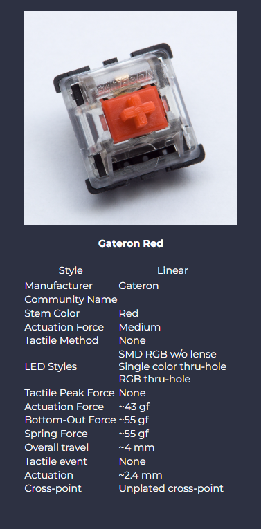

|
 |
Gateron Red $0.30 (per switch) |
 |
Gateron Red switches are similar to Cherry MX Red switches, but small friction points in downstroke and odd upstroke performance differentiate them. The friction may give sensitive typists pause. Switch activation, which is an important element in mechanical keyboards, occurs rather late in the keypress. That’s less than ideal for floating typists.
Contact / slider noise is barely present, making these the least noisy MX-based red switch we tested. That may be related to the stem’s looseness in the housing, slider ramp design, or contact design. The trade off for that silence is stem wobble, which is moderate to severe in most Gateron models.
Inconsistencies between switches seem to indicate hit or miss QC in Gateron products. |
 |